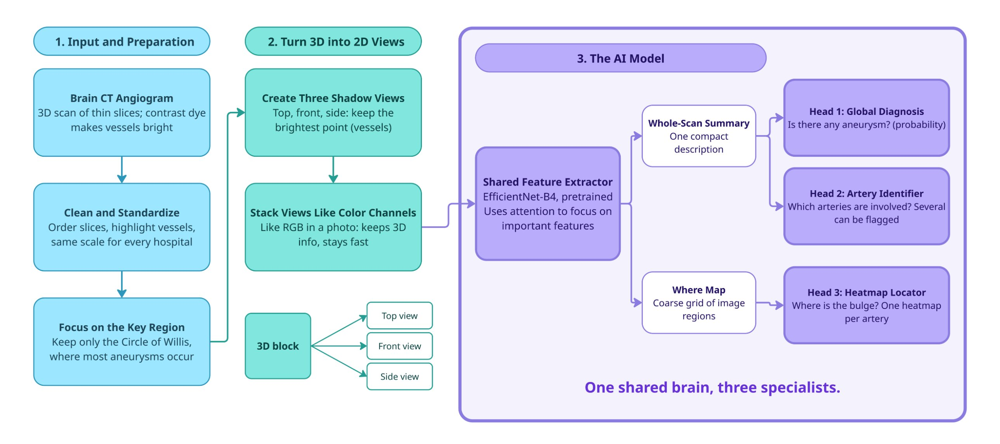
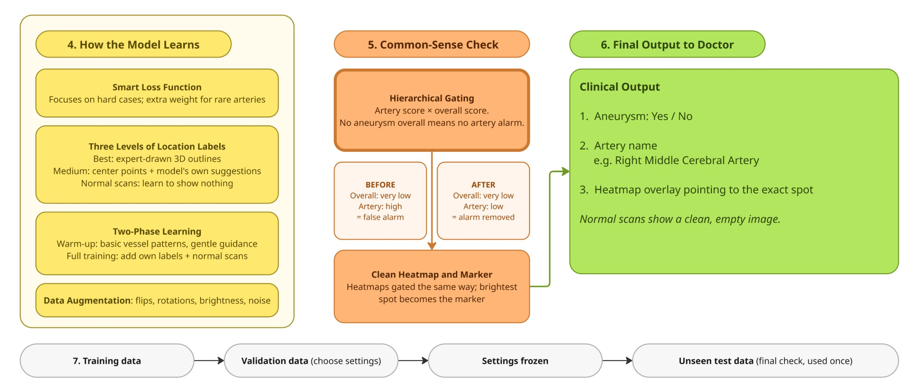
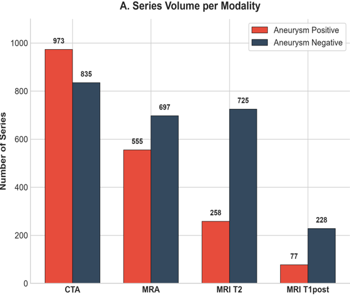
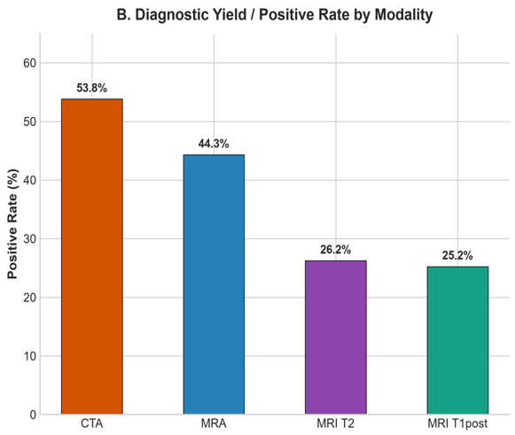
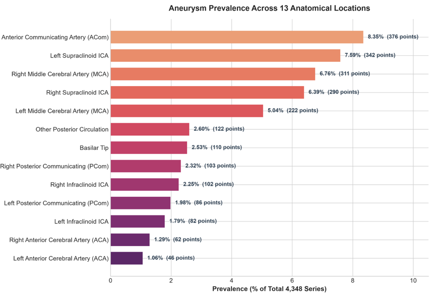
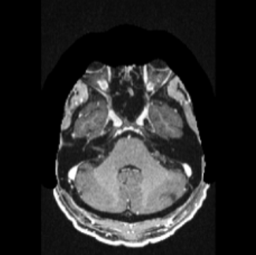
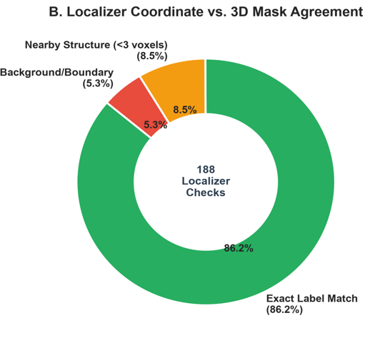

01
Introduction
- A brain aneurysm is a weak, bulging spot in a brain blood vessel
- Rupture causes bleeding in the brain (subarachnoid hemorrhage)
- Early detection with CT, MRI and angiography reduces the risk of rupture
02
Research Gap
Pre-trained medical foundation models as feature extractors for aneurysm detection are largely unexplored.
Key gap: no reviewed study has used a foundation model trained on medical CT images for brain aneurysm detection.
03
Problem & Objective
Problem
Automatically detect the presence and location of intracranial aneurysms across 13 anatomical locations from brain CT.
Objectives
- Test pre-trained AI models
- Extract clues from brain scans
- Build a tool to label aneurysms
One shared EfficientNet-B4 brain, three specialists: diagnosis, artery and heatmap location.
05
Methodology

Stages 1–3: CT preparation → 3D to 2D views → shared model with three heads

Stages 4–7: training → common-sense check → output to doctor → validation and testing
06
Implementation
1 Prepare dataSort slices, vessel window, crop Circle of Willis, 3-view stack
2 Build modelPretrained EfficientNet-B4 with three heads
3 TrainCombined loss, focal loss, two-phase learning
4 Sanity checkArtery and heatmap scores × overall score
5 TestThresholds on validation; test set used once
04
Dataset & EDA
Thousands of brain imaging series (CTA, MRA, MRI), each labelled for aneurysm presence across 13 vessel locations, with coordinates for positive cases.
4,348SERIES
4MODALITIES
13LOCATIONS
86.2%MASK MATCH

CTA has the most series

CTA positive rate is highest: 53.8%

ACom is the most common site (8.35%), followed by the left supraclinoid ICA (7.59%)

Sample brain scan

86.2% exact label match in 188 checks